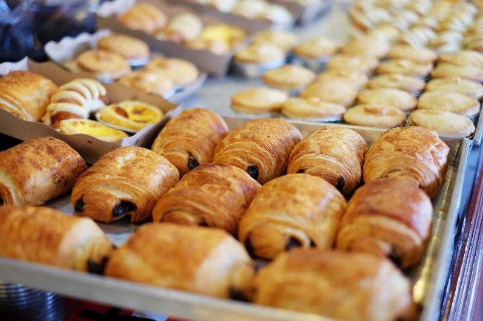
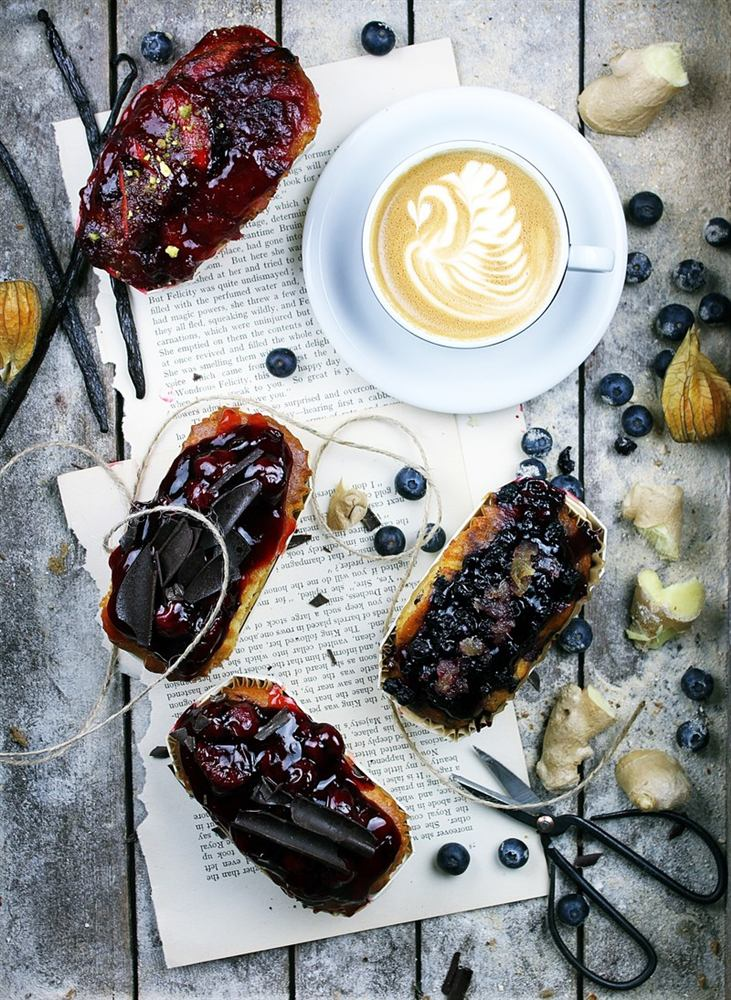
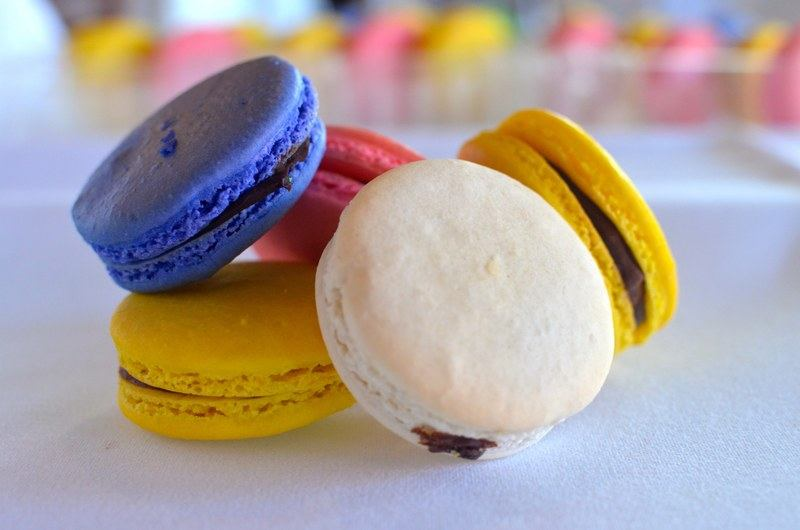
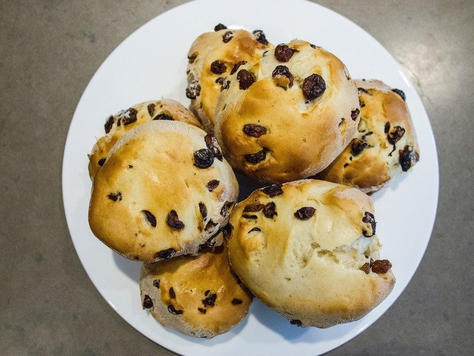
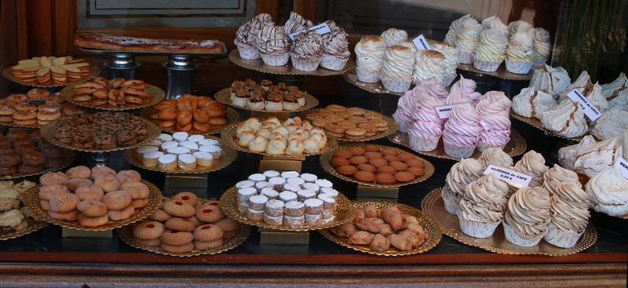
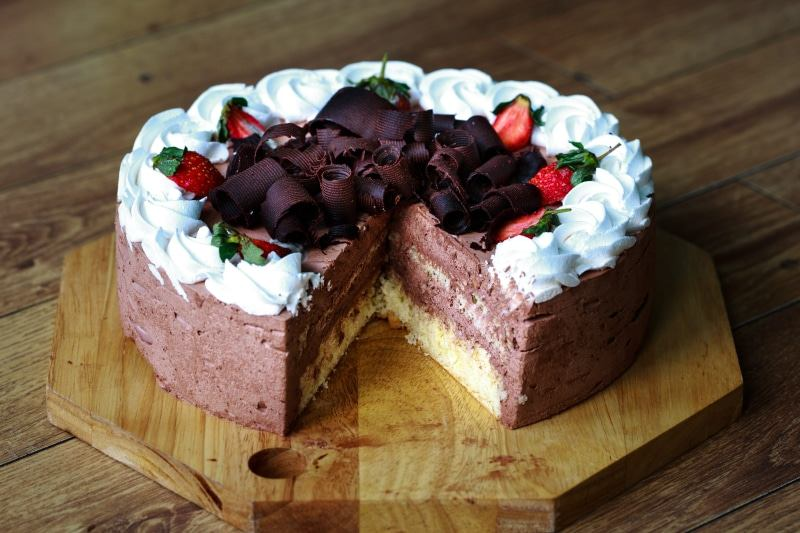
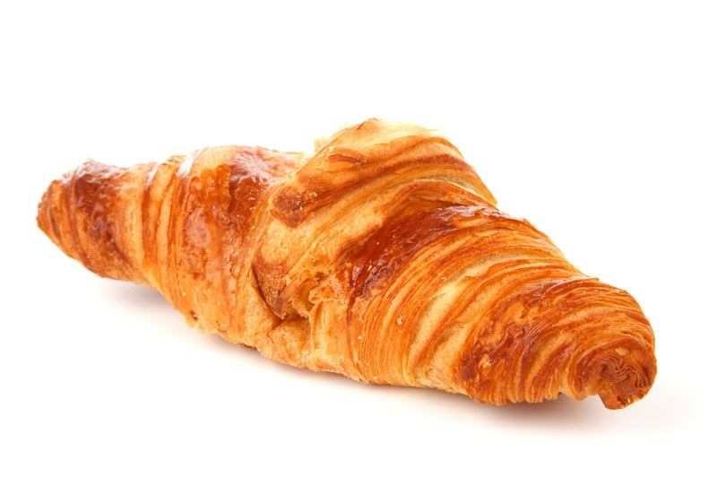
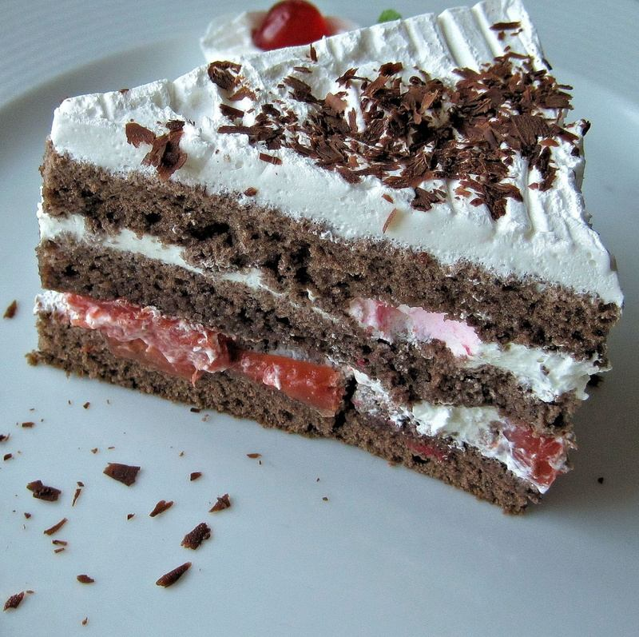
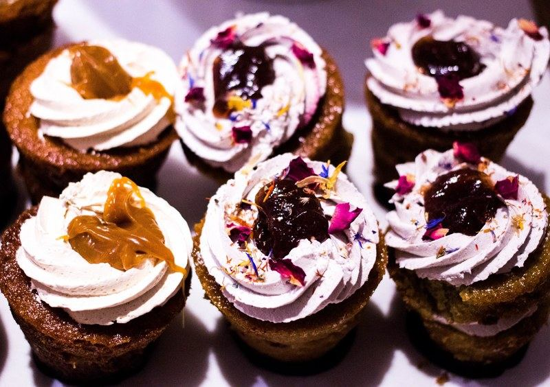

Our story
Thirty years on the same hilltop
Jean-Claude opened the shop in 1994 with one deck oven and a sourdough starter he’d carried from his grandmother’s kitchen in Lyon. The starter is still going. So is the oven, mostly.
We’re a family bakery in the medieval village of Èze, between Nice and Monaco. Most mornings the first customers are neighbors who have been buying the same baguette for decades. By mid-morning it’s hikers coming up the Nietzsche Path who need a croissant more than they need a view.
Online ordering lets us bake to order instead of guessing. That means less waste, and a pain au chocolat that is still warm when you pick it up.
From our ovens








